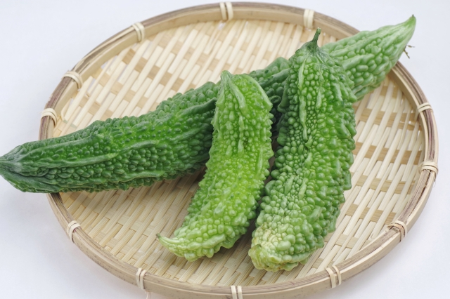
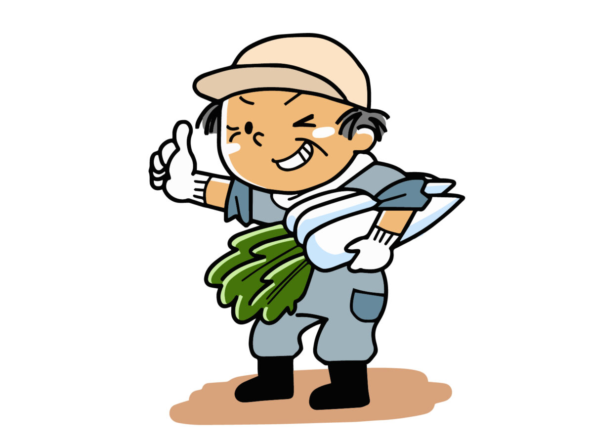

沖縄人でも知らない？沖縄伝統野菜28種類について

沖縄で伝統的な野菜といえば、紅イモやパパイヤ、島ラッキョウなど
全部で28種類ありますが、地元に住んでいてもその全ては知らないという方が増えてきています。
今回は沖縄伝統野菜28種類についてご紹介します。
沖縄伝統野菜とは
沖縄伝統野菜とは、沖縄で戦前から食されてきた地域固有の野菜です。
島野菜という名称で沖縄県内では親しまれており全部で28種類存在します。
以前は沖縄でも身近な野菜として郷土料理に利用され、
親しまれてきた野菜ですが、近年では味のクセや調理の手間が面倒なことから、
ご家庭で利用されることは減少してきています。
オキナワパウダーフーズは、その沖縄伝統野菜の良さを広めるため、日々精進しております！
沖縄伝統野菜28種類の良いところを紹介！

野菜それぞれに特徴があるとおり、沖縄伝統野菜にも特徴や良いところはあります。
ここではそれぞれの良いところについてご紹介します。
早速見てみましょう！
・ノビル
ユリ科ネギ属の野菜でニンニクやニラ、ラッキョウなどの仲間。
根本の肥大した部分が食用になり、ニンニクとラッキョウを足して割った味がします。
ニンニクほどの臭みはなく、ヌルッとした食感が特徴。
春が旬で沖縄では天ぷらや酢味噌和えにするのが一般的。
・カンダバー
沖縄では家庭料理に使用される頻度の多い伝統野菜で、
カンダバーを使用したジューシー(雑炊)は絶品。
味にクセの少ないツル状の野菜で、汁物の具材、煮物、和え物としても使用されます。
ビタミンC、A、B1、B2、食物繊維が豊富。
・ウンチェー
沖縄では昔から敷地内の湿地に繁茂しており、
夏場の野菜として利用されてきましたが、最近では畑での栽培が主流。
ビタミンAや食物繊維などが豊富で、シャキシャキとした食感が特徴です。
炒め物、和え物、汁物として食されることが多いです。
・クワンソウ
沖縄では昔から敷地内の湿地に繁茂しており、
夏場の野菜として利用されてきましたが、最近では畑での栽培が主流。
ビタミンAや食物繊維などが豊富で、シャキシャキとした食感が特徴です。
炒め物、和え物、汁物として食されることが多いです。
・サクナ
沖縄県八重山地域では「長命草」とも呼ばれ、内臓器官に効果的とされ、
ビタミンCやカロテン、カルシウムを豊富に含んでいます。
天ぷら、和え物としてや、ヤギ汁や魚汁の臭い消しとしても利用されます。
・フーロー豆
インゲンに比べ、暑さや病気に対して強く、育てやすいのが特徴で、
沖縄では夏野菜として重宝されています。豆は乾燥させると皮が硬くなり、
長時間煮ても胴割れしないことから、縁起を担いでお祝いの赤飯としても食べられます。
・ニガナ
沖縄では、琉球王朝時代から風邪の予防などで利用され、
青汁として飲んだりしていました。
名前のとおり苦く、アクがあるので生で食べる時は冷水にさらすのが一般的。
県内のどこでも入手可能な野菜で汁物として料理されることが多いです。
・葉ニンニク
沖縄で15世紀から食されている伝統的なお野菜。
ニンニクの芽とは違う野菜であり、ニンニクより香りがやわらかく、
葉はニラよりも歯ごたえがあることから、沖縄では炒め物に利用されることが多いです。
強壮、カゼ予防としても昔から食されています。
・ゴーヤー
沖縄の代表的な野菜の一つ。琉球王朝時代から食されています。
沖縄では、少し昔までは家庭菜園として一般家庭でも栽培されていましたが、
近年では本土でも家庭菜園の代表となっています。独特な苦みが特徴でビタミンCが豊富。
・パパイヤ
沖縄では、熟す前に食べることが多く、カリウムやビタミンAの他、
パパインという独特の成分を多く含んでいます。
母乳の出がよくなることから出産後の方々からも親しまれてきました。
他に炒め物や生食としても食べられます。
・ハンダマ
昔から沖縄では「血の葉・不老長寿の葉」と呼ばれ、ビタミンA、B2、鉄分の他、
ポリフェノールが含まれており、
カゼのひきはじめや疲労時の民間療法薬として活躍してきました。
茹でて和え物にしたり、雑炊、汁の具にすると鮮やかな紫色が付きます。
・モーウイ
琉球王朝時代、宮廷料理の食材として使用されていましたが、
後に一般家庭にも普及した伝統野菜です。
沖縄では、台風などの強風に負けない大事な夏野菜の一つ。
俗にいう「きゅうり」ですが、果皮が赤茶色で一般的なものと見た目が異なり、
青臭さがなく、味がしまっているのが特徴。みそ煮、漬物、汁物として利用します。
・フーチバー
ヨモギの一種ですが、和名では「ニシヨモギ」と呼ばれ、
本土のヨモギに比べ苦みがやわらかいです。
沖縄では古くからジューシー(炊き込みごはん)としてや、
肉汁、ヤギ汁の臭い消しや薬味として食されています。
ビタミンA、カリウム、カルシウム、鉄分が豊富で薬草としても使用されてきました。
・ヤマン
沖縄伝統の巨大イモで一株100㎏にもなることから、
その大きさを競う大会が毎年開催されています。
沖縄では昔から滋養強壮のために塊根を食べたり、天ぷら、煮つけとしても利用されてきました。
・紅イモ
戦後の沖縄の食を支えてきた貴重なお野菜。
紅イモは沖縄ではとても親しまれており、饅頭、羊羹、チップスなど様々な商品が生まれています。
沖縄では、体力低下時や便秘時に効果的と伝えられています。
ビタミンC・A、カリウムなどのミネラルが豊富。
・タイモ
沖縄の正月やお盆などには欠かせない食材で郷土料理としても使用されることが多いです。
かなり昔に南方から伝わった作物で、体力や胃腸の機能低下時によく食されています。
イモ類の中でもカルシウムやカリウム、ビタミンA・C、鉄分などの含有量も豊富。
・ニンジン
黄色い特徴的なニンジンで沖縄の在来種です。
腎臓、レバー、赤肉と一緒に島ニンジンを煮込んだ汁物は昔から体力増進用として重宝されており、
島ニンジン自体は滋養食としても沖縄では有名。
カロテンを多く含み、油と共に調理すると吸収が良くなります。
・カボチャ
沖縄在来種のカボチャで、暑さや病害虫に強いため、
家庭でも栽培しやすいのが特徴です。
沖縄では長期保存できることから貯蔵野菜としても重宝され、
炒め物や煮物として食されることが多いです。
ビタミンA・B1・Cを豊富に含んでいます。
・シチャナバー
草丈が１ｍ近くになるほどの立ち性で、
下葉から掻き取って収穫しないといけなくなることから
「掻きチシャ」とも呼ばれています。生食にはあまり向かず、
油炒めやみそ汁などとして食されることが多いです。ビタミンＡ・Ｃの含有が豊富。
・シマナー
和名では「からしな」と呼ばれる沖縄野菜です。
塩漬けしたものを「チキナー」と言いますが、豆腐などと炒めて食べると絶品。
栄養価が高く独特の苦みが食欲をそそります。
塩漬け、炒め物、おひたし、みそ汁の具として食べても美味しいです。
・シカクマメ
切断面が四角で角の部分にひらひらした翼が付いているのが特徴の沖縄伝統野菜。
コリコリとした歯ごたえに少し苦みがあります。
軽く茹でて揚げもの、煮物、炒め物、サラダなどにして食べます。
・ナーベーラー
和名ではへちまと呼ばれる野菜で、沖縄では夏野菜としてゴーヤーと肩を並べる存在。
みそ煮や汁物にして食すことが多く、種まで食べられます。
ビタミン、ミネラルが豊富で美容にいいと言われています。
・ンスナバー
不断草とも呼ばれ、葉が堪えることなく次々生えてくることから
そう呼ばれるようになった説も。
乾燥と暑さに強く繁殖力もあるため、
戦後の沖縄では野菜の少ない時期によく食されていました。
スープや煮込み料理、炒めて食べます。
・オオタニワタリ
葉の長さが１ｍ以上になる植物で、
沖縄では新芽・若芽の部分を炒め物や煮物、天ぷらにして食べます。
八重山では祭事や行事でも使われています。
本土では観葉植物としてもなじみ深い植物。
・島ダイコン
沖縄在来種のダイコンで保存食としても重宝されます。
冬が旬で正月や年越しの肉汁の具材として用いられ、
祝いの席では紅白なますとしてニンジンと一緒に出てくることも。
・島ラッキョウ
香りと辛味が強い沖縄在来種で本土のより小ぶりなのが特徴。
沖縄の人にとってはなくてはならない野菜の一つです。
塩もみして浅漬け、丸ごと天ぷら、その他炒め物などにして食します。
疲労回復の際にも重宝されています。
まとめ
今回は沖縄伝統野菜28種類についてざっくりとご紹介しました。
全部知っているという方もいれば、
これは初めて知ったという方もいるのではないでしょうか。
オキナワパウダーフーズは今後も沖縄伝統野菜や沖縄ならではの野菜についてご紹介します。
その良さを広く知って頂きたいから――
その気持ちでこれからも日々精進してまいります！